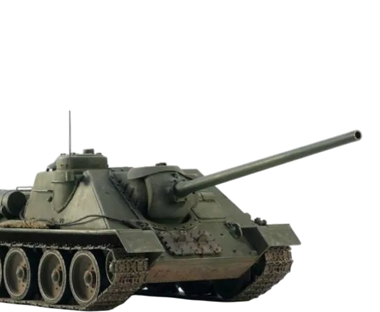

«Гроза "Тигров" и "Пантер"!»
Тип: Средняя противотанковая САУ (самоходная артиллерийская установка)
Годы производства: 1944–1948 (СССР и зарубежные варианты)
Скорость: 48 км/ч (по шоссе)
Вооружение: 100-мм пушка Д-10С (пробивала лоб "Пантеры" с 1500 метров!) 1 × 7,62-мм пулемёт (для самообороны)
Интересный факт:Одна из самых мощных противотанковых САУ Второй мировой. Немцы боялись её даже больше, чем ИС-2, потому что СУ-100 была быстрее, маневреннее и незаметнее.
Шоковый эффект: «Охотник за кошками» В январе 1945 года под Будапештом батарея СУ-100 за один бой уничтожила 12 "Пантер" и 2 "Тигра" без потерь! Немецкие танкисты сначала не поняли, откуда бьют – СУ-100 маскировалась в развалинах и била с дистанции, на которой их пушки были почти бесполезны
Легендарные бои:- Берлин, 1945 год – СУ-100 работали как «истребители танков», выбивая немецкие засады из каменных «мешков». Одер, февраль 1945 – одна СУ-100 под командованием лейтенанта Иванова подбила 3 "Фердинанда", стреляя с закрытой позиции. После войны – СУ-100 воевали в Корее, на Ближнем Востоке и даже в Африке, оставаясь грозным оружием до 1960-х!
«Когда мы увидели, как СУ-100 с первого выстрела разносит "Пантеру", поняли – у русских появилось что-то пострашнее "Сталинского сокола" (Ил-2)»